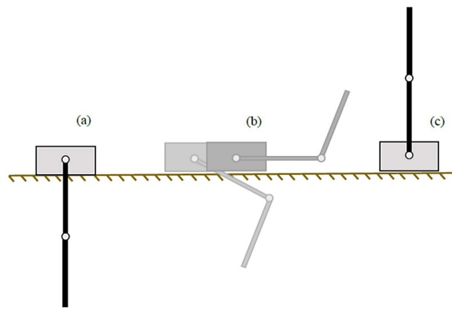
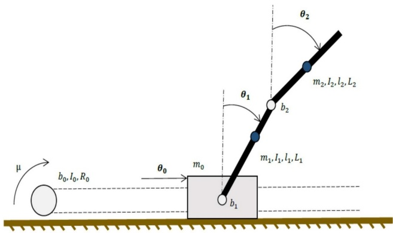
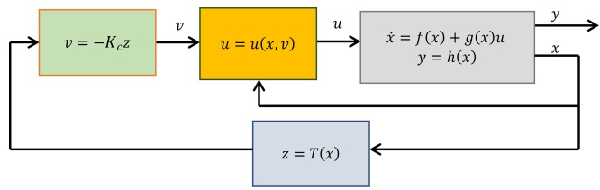
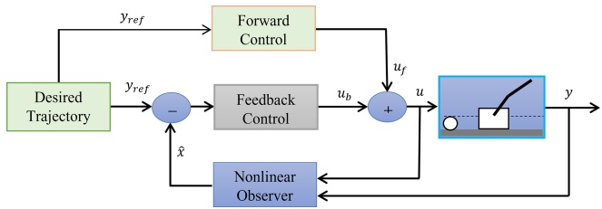
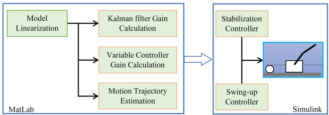
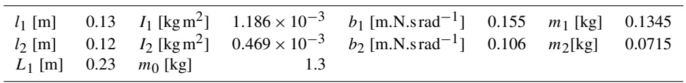
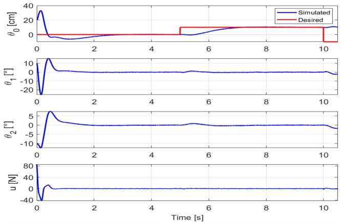
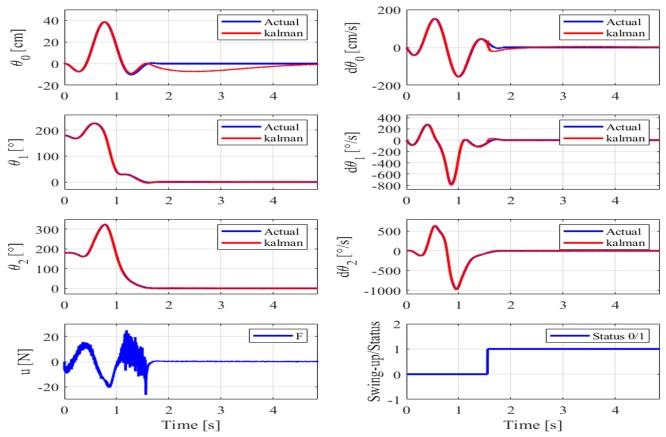
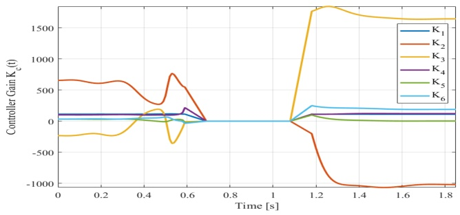
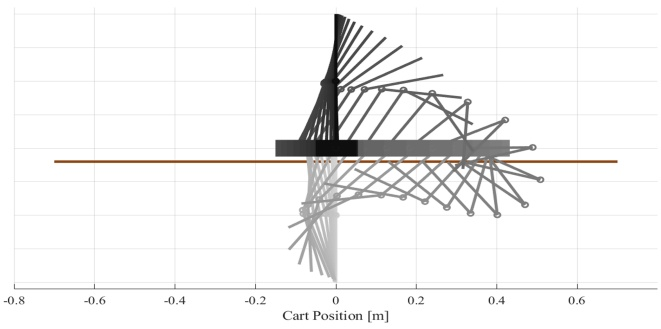

Swing-up control of double-inverted pendulum systems
Ameen M. Al Juboori1, Mustafa Turki Hussein2, and Ali Sadiq Gafer Qanber3
1Biomedical Engineering Department, Al-Mustaqbal University College, Hillah, Iraq 2Department of Mechanical Engineering, University of Babylon, College of Engineering, Hillah, Iraq 3Department of Biomedical Engineering, University of Babylon, College of Engineering, Hillah, Iraq
Correspondence: Ameen M. Al Juboori (ameenal-juboori@mustaqbal-college.edu.iq)
Received: 25 November 2022 – Revised: 4 May 2023 – Accepted: 9 November 2023 – Published: 29 January 2024
Abstract. This article deals with presenting a new swing-up control approach of a double-inverted pendulum on a trolley. The dynamic model of the double-inverted pendulum is derived and linearized. Two different linearization approaches are used: first, the traditional Taylor’s series approach and, second, using partial linearization. A state feedback control algorithm has been implemented based on the linearized model from Taylor’s series. Furthermore, a method for swinging up the pendulum to the inversion position from rest (swing-up) has been presented. The design and implementation of the swing-up function of the pendulum are implemented using the partial linearized model. The swing-up control procedure depends on using the feedforward–feedback controllers’ combination to transfer the pendulums from the downward to the upward position. The time-variant controller gain is used for the sake of the swing-up control procedure. The performances of these algorithms are shown in this paper through simulations.
1 Introduction
Non-linear, unstable, or underactuated systems are generally very difficult to control. Therefore, they are considered to be a challenge and are the subject of many technical reports, student projects, and academic papers. Their goal is not always to build a practically useful device but rather to develop or improve existing control algorithms, either by simulation or even experimentally to verify their applicability in general. The double-inverted pendulum model consists of several parts. A cart moves along a linear track, and two pendulums are connected to the carriage and each other by a rotational linkage (Fig. 1). The input to the system is the torque of a DC motor, which is transmitted by a toothed belt as a force to the carriage. The system has one challenging equilibrium position in which the system can be stabilized, the upper (inverse) (see Fig. 1a–c). Furthermore, three configurations of the double-inverted pendulum, which are upperlower, lower-upper, and lower, are also considered as equilibrium positions. the lower equilibrium is always reached by the system (with the damping element) in finite time; control is needed to maintain the upper-lower, lower-upper, and inverse configurations in real conditions. The stabilization of the double-inverse pendulum is further understood in this paper as a regulation to maintain its inverse position.

- Lower equilibrium position, (b) swing-up, and (c) upper equilibrium position.
The next task of the control program is to be the so-called swing-up. This term refers to the realization of such a movement of the carriage that brings the system from the lower equilibrium position to the inverse position. The situation is indicated in Fig. 1c. The control requirement is primarily for the robustness and repeatability of the swing-up. There are several published articles with different methods addressing the swing-up problem of a double-inverted pendulum. However, in the vast majority of cases, these are only simulations that have not been experimentally verified on a real system.
A mathematical model of this system was derived based on the Lagrangian mechanics; the dynamic model is discretized, and then the Laguerre series is implemented in model pre-dictive control technology to trace the control signal for the system (Qian et al., 2011). An RNA genetic algorithm with fuzzy logic is used to control the pendulum system, where the fuzzy logic controller can improve the performance of the controller by using the RNA genetic algorithm to find certain optimal membership functions (Sun et al., 2015). The technical report compares the linear quadratic regulator, the state-dependent Riccati equation (SDRE), and the use of neural networks (NNs) and concludes that the NNs have a limited capability to improve the SDRE performance (Bogdanov, 2004). Adaptive sliding-mode control in combination with a fuzzy neural network is used to control a double-inverted pendulum. The fuzzy neural network is designed as a system controller, and the adaptive sliding mode is designed to carry out the disturbance problem (Mon and Lin, 2014).
In the previous literature, the dynamic model of the double-inverted pendulum system is linearized around an operating point to design a linear controller. An alternative to the above dynamic linearization is partial feedback linearization – splitting the generalized coordinates into a regularization whose dimensions are given by the number of inputs, and variables consider only zero dynamics (Hedrick and Girard, 2010; Neusser and Valášek, 2013). This path of linearization is used to design the swing-up function of the double-inverted pendulum (Hedrick and Girard, 2010). A more detailed description of the method can be found in the swing-up control practical example (Neusser and Valášek, 2013). Swing-up control of the double-inverted system was proposed to separate pendulums and to control each one distinctly (Henmi et al., 2014). A non-linear model predictive control is used to build up a control algorithm for swingup motion (Jaiwat and Ohtsuka, 2014). A method for controlling the energy of the system with partial linearization is presented, and passivity-based control is utilized in the work (Zhong and Rock, 2001). The solution of the boundary value problem with free parameters is used to generate the control approach (Graichen et al., 2007)
The motivation of this work was mainly to demonstrate the theoretical swing-up control procedures on a model of a double-inverted pendulum. Indeed, there are not many publications that deal with the application of the proposed algorithms on a real mechanism. The paper focuses on the theoretical basis for the following part. It consists of an explanation of the terms used and a search of the studied area in terms of stabilization and swing-up. It also includes the derivation of the equations of motion and the presentation of the existing double-pendulum model. Furthermore, this study serves to apply a linear quadratic controller and a Kalman filter and lastly to implement the swing-up function. The boundary value problem is solved to generate the trajectory for the swing-up motion of the pendulums. The partial linear realization method is used to linearize the system dynamically during the swing-up process. Dynamic input–output decoupling is used to keep the system in a stable position after the pendulums reach the upper unstable position (Qian et al., 2011).
The rest of the paper is organized as follows: in the following section, the mathematical model is derived; next, the stabilization control is presented; after that, the swing-up procedure is detailed; later, the simulation of the work is addressed, and the article conclusions are shown in the last section.
2 Mathematical modeling
Figure 2 schematically shows the double-inverted pendulum model. The meaning of the individual variables is evident from the figure. The system has 3 degrees of freedom – the sliding motion of the carriage and the rotational motions of the two pendulums. A vector of state variables is constructed as the displacement of the carriage or the rotation of the pendulums and the velocity of the carriage or the angular velocity of the pendulums:

\[ \boldsymbol {\theta} = \left[ \theta_ {0}, \theta_ {1}, \theta_ {2}, \dot {\theta} _ {0}, \dot {\theta} _ {1}, \dot {\theta} _ {2} \right] ^ {T}. \tag{1}\]
For input u, the problem of obtaining a mathematical model is a search for an equation of motion of the following form:
\[ \dot {\boldsymbol {\theta}} = \boldsymbol {f} (\boldsymbol {\theta}) + \boldsymbol {g} (\boldsymbol {\theta} u). \tag{2}\]
Lagrange’s equations of the second kind were used for this purpose. The mathematical model of the double-inverse pendulum can be expressed as the sum of or difference between the partial derivatives of the mechanical energies according to the respective independent variables and their derivatives:
\[ \frac {\mathrm{d}}{\mathrm{d} t} \left(\frac {\partial \boldsymbol {E} _ {K}}{\dot {\boldsymbol {\theta}} _ {i}}\right) - \frac {\partial \boldsymbol {E} _ {K}}{\boldsymbol {\theta} _ {i}} + \frac {\partial \boldsymbol {D}}{\boldsymbol {\theta} _ {i}} + \frac {\partial \boldsymbol {E} _ {P}}{\boldsymbol {\theta} _ {i}} = \frac {\partial \boldsymbol {W} _ {\mathrm{e}}}{\boldsymbol {\theta} _ {i}} = \frac {\partial \boldsymbol {P} _ {e}}{\dot {\boldsymbol {\theta}} _ {i}}, \tag{3}\]
where \(\mathrm{E}_{\mathrm{K}}\) and \(\mathrm{E_p}\) are the kinetic and the potential energy. D denotes the dissipative component, \(W_{e}\) denotes the work of external forces, and \(P_{\mathrm{e}}\) denotes their power. For individual bodies, the kinetic, potential, and dissipative energies and external forces can be expressed (Bogdanov, 2004).
The velocity energies of the centers of gravity of the pendulums can be obtained from the time derivative of their position vector.
\[ E _ {\mathrm{K} _ {0}} = \frac {1}{2} m _ {0} \dot {\theta} _ {0} ^ {2} + \frac {1}{2} I _ {0} \omega_ {0} ^ {2} = \frac {1}{2} m _ {0} \dot {\theta} _ {0} ^ {2} + \frac {1}{2} \frac {I _ {0}}{R _ {0} ^ {2}} \dot {\theta} _ {0} ^ {2} \tag{4}\]
\[ E _ {\mathrm{K} _ {1}} = \frac {1}{2} m _ {1} \left[ \left(\dot {\theta} _ {0} + l _ {1} \dot {\theta} _ {1} \cos \theta_ {1}\right) ^ {2} + \left(l _ {1} \dot {\theta} _ {1} \sin \theta_ {1}\right) ^ {2} \right] + \frac {1}{2} l _ {1} \dot {\theta} _ {1} ^ {2} \tag{5}\]
\[ \begin{array}{c} E _ {\mathrm{K} _ {2}} = \frac {1}{2} m _ {2} \Big [ \big (\dot {\theta} _ {0} + L _ {1} \dot {\theta} _ {1} \cos \theta_ {1} + l _ {2} \dot {\theta} _ {2} \cos \theta_ {2} \big) ^ {2} \\ \quad + \big (L _ {1} \dot {\theta} _ {1} \sin \theta_ {1} + l _ {2} \dot {\theta} _ {2} \sin \theta_ {2} \big) ^ {2} \Big ] + \frac {1}{2} I _ {2} \dot {\theta} _ {2} ^ {2} \end{array} \tag{6}\]
Potential energy is as follows:
\[ \begin{array}{c} E _ {P _ {0}} = 0, E _ {P _ {1}} = m _ {1} g l _ {1} \cos \theta_ {1}, E _ {P _ {2}} \\ = m _ {2} g (L _ {1} \cos \theta_ {1} + l _ {2} \cos \theta_ {2}). \end{array} \tag{7}\]
The dissipative component is as follows:
\[ \begin{array}{l} D _ {0} = \frac {1}{2} b _ {0} \dot {\theta} _ {0} ^ {2}, D _ {1} = \frac {1}{2} b _ {1} \dot {\theta} _ {1} ^ {2} + \frac {1}{2} b _ {2} \big (\dot {\theta} _ {2} - \dot {\theta} _ {1} \big) ^ {2}, \\ D _ {2} = \frac {1}{2} b _ {2} \big (\dot {\theta} _ {2} - \dot {\theta} _ {1} \big) ^ {2}. \end{array} \tag{8}\]
In Eqs. (4)–(8), the \(\theta_{j}\) represents the motion variable; \(m_{j}\) is the mass; \(b_{j}\) is the viscous friction constant; and \(j = 0,1,2\) stands for cart and first and second pendulum, respectively. \(I_{0}\) is the inertia of the pulley, and \(l_{1,2}\) are the lengths of the pendulums.
The only input to the system is the moment μ on the motor shaft. However, for better understanding, the equations were derived for the force on the carriage F. There is a simple relationship of direct proportionality between these two quantities:
\[ \mu = F R _ {0}, \tag{9}\]
where \(R_{0}\) is the radius of the pulley. Then the external force output is given by
\[ \boldsymbol {P} _ {\mathrm{e}} = F \dot {\theta} _ {0}. \tag{10}\]
Substituting the above equations into Eq. (2) gives the resulting equation of motion, which can be written in standard matrix form:
\[ \mathbf {M} (\boldsymbol {q}) \ddot {\boldsymbol {q}} + \mathbf {B} (\boldsymbol {q}, \dot {\boldsymbol {q}}) \dot {\boldsymbol {q}} + \mathbf {K} (\boldsymbol {q}) = \boldsymbol {H} _ {u}, \tag{11}\]
where the vector \(\pmb{q} = [\theta_0,\theta_1,\theta_2]\) ; the introduction of matrices is not listed here for the sake of abbreviation. The equation of motion in the form of Eq. (5) can be expressed as follows:
\[ \begin{array}{c} \dot {\boldsymbol {\theta}} = \left[ \begin{array}{c c} \mathbf {0} & \mathbf {I} \\ \mathbf {0} & - \mathbf {M} ^ {- 1} \mathbf {B} \end{array} \right] \boldsymbol {\theta} + \left[ \begin{array}{c} \mathbf {0} \\ - \mathbf {M} ^ {- 1} \mathbf {K} \end{array} \right] \\ + \left[ \begin{array}{c} 0 \\ \mathbf {M} ^ {- 1} \mathbf {H} \end{array} \right] u, \end{array} \tag{12}\]
where 0 represents the zero matrix, and I represents the unit matrix of the corresponding dimensions.
To design a linear controller, the non-linear equation of motion must first be linearized. It is common to approximate around the nominal operating point \((\theta_{n},u_{n})\) by the first terms of the Taylor series (Franklin et al., 2002). The resulting equation of motion represented by appropriate state vector and state space matrices is as follow:
\[ \boldsymbol {\Delta} \dot {\boldsymbol {\theta}} (t) = \mathbf {A} \Delta \boldsymbol {\theta} (t) + \mathbf {B} \Delta u (t). \tag{13}\]
3 Stabilization control of the system
In this section, attention is paid to the possibilities of stabilizing the double-inverted pendulum. The LQR and feedback linearization as the theoretical basis for the following system of the swing-up search have achieved detailed description.
3.1 Linear quadratic regulator (LQR)
The objective of this method is to design the optimal control of a linear system given the magnitude of the active intervention u and the deviation of the states x from the zero (desired) value in time. Practically, the objective is to minimize the cost function J , which is given by
\[ J = \int_ {0} ^ {T} \left(\boldsymbol {x} ^ {T} (t) \mathbf {Q} _ {\mathrm{c}} \boldsymbol {x} (t) + u ^ {T} (t) \mathbf {R} _ {\mathrm{c}} u (t)\right) \mathrm{d} t. \tag{14}\]
For the state feedback law, we have the following:
\[ u (t) = - K _ {\mathrm{c}} \boldsymbol {x} (t). \tag{15}\]
For discrete systems, the integral in Eq. (6) is replaced by the summation. The matrices \(Q_{c}\) and \(R_{c}\) correspond to the weights of the states and inputs, respectively (Franklin et al., 2002). \(\boldsymbol{K}_{\mathrm{c}}\) is the control matrix that can be subsequently used for stabilization and is given by the solution of the associated Riccati equation. LQR is a widely used method, and there is a wealth of documentation on it. Implementation-wise, the simplest modification of LQR for non-linear systems is the state-dependent Riccati equation (SDRE). The principle of the method is to linearize the model around the current state for each time instant and then compute the optimal control matrix. However, this method places greater demands on computational power.
3.2 Feedback linearization (FBL)
In contrast to the usual linear function approximation, the method used does not neglect the non-linear terms and works even outside the vicinity of the working point. There are two principles utilized in combination in this work’s input state and input–output linearization.
The necessary algebraic operations are generally not trivial. For the sake of scope, the system is restricted to the single input, single output (SISO) described by the following:
\[ \dot {\boldsymbol {x}} = \left[ \begin{array}{c} \dot {x} _ {1} \\ \ddots \\ \dot {x} _ {n - 1} \\ \dot {x} _ {n} \end{array} \right] = \left[ \begin{array}{c} x _ {2} \\ \ddots \\ x _ {n} \\ f (\boldsymbol {x}) + g (\boldsymbol {x}) u \end{array} \right]. \tag{16}\]
The input state linearization consists of finding a suitable transformation of the states T and input u such that
\[ \boldsymbol {z} = \boldsymbol {T} (\boldsymbol {x}), u = u (\boldsymbol {x}, v). \tag{17}\]
The role of regulation is transferred to system control:
\[ \dot {z} = \mathbf {A _ {c}} x + \mathbf {B _ {c}} v. \tag{18}\]
The linearization conditions, detailed description, and examples are exhaustively explained in Hedrick and Girard (2010) and Graichen et al. (2007).
We assume that the outputs of the considered system y are given by the following function:
\[ y = h (x). \tag{19}\]
The principle of the input–output linearization is to find the direct dependence of the outputs on the input by successively deriving the function h with regard to time until the following dependence appears:
\[ \begin{array}{c} \mathbf {y} ^ {(1)} = \frac {\partial \boldsymbol {h}}{\partial \boldsymbol {x}} \frac {\mathrm{d} x}{\mathrm{d} t} = \frac {\partial \boldsymbol {h}}{\partial x} \big [ f (\boldsymbol {x}) + g (\boldsymbol {x}) u \big ] = L _ {\mathrm{f}} (h) \\ + L _ {\mathrm{g}} (\boldsymbol {h}) u, \mathbf {y} ^ {(2)} = L _ {\mathrm{f}} ^ {2} (\boldsymbol {h}) + L _ {\mathrm{g}} (L _ {\mathrm{f}} (\boldsymbol {h})) u, \end{array} \tag{20}\]
and so on until, for the kth derivative, the input term is non-zero (Aguiar, 2011). The prescription of the new input u is given by
\[ u = \frac {1}{L _ {\mathrm{g}} \left(L _ {\mathrm{f}} ^ {k - 1} (\boldsymbol {h})\right)} \left(- L _ {\mathrm{f}} ^ {k} (\boldsymbol {h}) + v\right), \tag{21}\]
where v is equal to \(y(k)\) . The transformed systems prescribed by Eqs. (22, 23) are already completely linear – they can therefore be controlled by the linear method (LQR, array placement).
\[ \dot {\boldsymbol {z}} = \left( \begin{array}{c} y ^ {(1)} \\ \ddots \\ y ^ {(k - 1)} \\ y ^ {(k)} \end{array} \right) = \mathbf {A} _ {\mathrm{c}} \boldsymbol {z} + \mathbf {B} _ {\mathrm{c}} v \tag{22}\]
\[ \begin{array}{l} \mathbf {A} _ {\mathrm{c}} = \left[ \begin{array}{c c c c c c} 0 & 1 & 0 & \ddots & 0 \\ 0 & 0 & 1 & 0 & \ddots \\ \ddots & \ddots & \ddots & \ddots & \ddots & \ddots \\ 0 & 0 & \ddots & 0 & 1 \\ 0 & 0 & \ddots & 0 & 0 \end{array} \right], \mathbf {B} _ {\mathrm{c}} = \left[ \begin{array}{c} 0 \\ 0 \\ \ddots \\ 0 \\ 1 \end{array} \right], \\ v = - K _ {\mathrm{c}} z \end{array} \tag{23}\]
A schematic of the closed-loop control is shown in Fig. 3. For systems with n inputs and m outputs (MIMO), where \(n = m\) the procedure is more complicated (we refer to static input– output decoupling), but the basic principles remain the same (Hedrick and Girard, 2010; Henson and Seborg, 1997) and lead to time-invariant feedback control.

Also, A Kalman filter, which is a very useful tool that extracts the best possible estimate of all the states of the system (even if not all of them are measured) from imperfect knowledge of the model and inaccurate measurements (Nise, 2020), is used in this work. This is a stochastic observer – it assumes that the quantities are random with a Gaussian distribution and works with their mean and variance (uncertainty). Tuning of the algorithm consists of an appropriate choice of the matrices \(\mathbf{Q}_{0}\) and \(\left|R_{0}\right|\) which introduce the co-variance of process and measurement noise into the calculation. At each stage, the state estimation and covariance matrix \(\left|\mathbf{P}_{0}\right|\) are adjusted, which carries information about the uncertainty of the states and their correlation with each other.
4 Swing-up control
The key to planning a swing-up is finding a suitable trajectory for the carriage and pendulums so that the positions and velocities of the carriage and pendulums are zero when the swing-up is complete. However, whatever the method of obtaining the swing-up trajectory (or the necessary input for swing-up), in terms of structure, it is possible to divide the control into forward or backward. Feedforward control can only be used if the behavior of the double-inverted pendulum is well known. A previously calculated input is applied to the system, and a certain output is expected. However, the double-inverse pendulum is extremely sensitive to initial conditions. Even a small deviation from the calculated trajectory can cause a failed swing-up. A possible solution is to add feedback control. If we denote by \(u_{f}\) the input given by as the forward control and that given by \(u_{b}\) as the backward control, then the resultant is given by their sum (Fig. 4).

4.1 Boundary value problem (BVP) with free parameters
Finding a trajectory for the swing-up function is a case of the boundary value problem. The equation of motion (1) is a system of ordinary differential equations (ODEs), and the boundary conditions are as follows:
\[ \begin{array}{c} \boldsymbol {\theta} _ {0} (t = 0) = [ 0, \pi , \pi , 0, 0, 0 ] ^ {T}, \boldsymbol {\theta} _ {T} (t = T) \\ = [ 0, 0, 0, 0, 0, 0 ] ^ {T}, \end{array} \tag{24}\]
where t is the time, and T is the duration of the swing. For the 6 equations and 12 conditions, the associated boundary value problem is overdetermined. In order to solve it, Qian et al. (2011) propose defining the cart trajectory \(Y(t)\) by the cosine series (13) and thus adding the necessary number of free \(p = \left[p_{1} p_{2} p_{3} p_{4}\right]\) to the equation of motion.
\[ Y (t, p) = a _ {0} + a _ {1} \cos \left(\frac {\pi t}{T}\right) + \sum_ {i = 2} ^ {5} p _ {i - 1} \cos \left(\frac {i \pi t}{T}\right) \tag{25}\]
The terms \(a_0 = -(p_1 + p_3)\) and \(a_1 = -(p_2 + p_4)\) are obtained by setting \(Y(0,p)=Y(T,p)=0\) , which appears by deriving Eq. (13) by time. The boundary value problem can be solved by a suitable numerical method. If the deviation of the actual state values from the nominal trajectory \(\boldsymbol{\theta}^{*}\) and input \(u^{*}\) is sufficiently small, the system can be described by a linear time-dependent state equation (Zhong and Rock, 2001):
\[ \Delta \dot {\boldsymbol {\theta}} (t) = \mathbf {A} (t) \Delta \boldsymbol {\theta} (t) + \mathbf {B} (t) \Delta u (t), \tag{26}\]
where the matrices A and B are given by the linearization of Eq. (12) (see “Feedback linearization” section) along the nominal trajectory and input. And for such a system, we design a linear controller at each time instant:
\[ \Delta u (t) = - \boldsymbol {K} _ {\mathrm{c}} (t) \Delta \theta (t) = - \boldsymbol {K} _ {\mathrm{c}} (t) (\boldsymbol {\theta} (t) - \boldsymbol {\theta} ^ {*} (t)), \tag{27}\]
where the control matrix K is computed forward. Its calculation therefore does not burden the processor on which the swing-up and subsequent stabilization program runs. The resulting forward and backward control actions are given by the following:
\[ u (t) = u _ {\mathrm{a}} (t) + \boldsymbol {K} _ {\mathrm{c}} (t) \left(\boldsymbol {\theta} ^ {*} (t) - \boldsymbol {\theta} (t)\right). \tag{28}\]
4.2 Partial linearization and feedforward
By studying the natural motion of a system (without control), some useful knowledge can be gained. In order to calculate a suitable elevation trajectory, the natural frequencies of the system must be found. This is based on the findings of the feedback linearization (FBL).
For the sake of partial linearization, the generalized coordinates of the double-inverse pendulum and the variable vector q are divided into two parts; \(\pmb{q}_{x}\) denotes the controlled part (the carriage), and \(\pmb{q}_{\theta}\) denotes the rest with zero dynamics (the pendulum). With the proposed decomposition, Eq. (5) is decomposed into the following:
\[ \mathbf {M} _ {x x} \ddot {\boldsymbol {q}} _ {x} + \mathbf {M} _ {x \theta} \ddot {\boldsymbol {q}} _ {\theta} + \mathbf {B} _ {x x} \dot {\boldsymbol {q}} _ {\mathrm{X}} + \mathbf {B} _ {x \theta} \dot {\boldsymbol {q}} _ {\theta} = u, \tag{29}\]
\[ \mathbf {M} _ {\theta x} \ddot {\boldsymbol {q}} _ {x} + \mathbf {M} _ {\theta \theta} \ddot {\boldsymbol {q}} _ {\theta} + \mathbf {B} _ {\theta \theta} \dot {\boldsymbol {q}} _ {\theta} + \mathbf {K} _ {\theta} = 0, \tag{30}\]
and the matrices M, B, and K become
\[ \left| \begin{array}{l} \mathbf {M} (q) = \left[ \begin{array}{c c} \mathbf {M} _ {x x} (1, 1) & \mathbf {M} _ {x \theta} (1, 2) \\ \mathbf {M} _ {\theta x} (2, 1) & \mathbf {M} _ {\theta \theta} (2, 2) \end{array} \right], \mathbf {B} (\boldsymbol {q}, \dot {\boldsymbol {q}}) \\ = \left[ \begin{array}{c c} \mathbf {B} _ {x x} (1, 1) & \mathbf {B} _ {x \theta} (1, 2) \\ \mathbf {0} (2, 1) & \mathbf {B} _ {\theta \theta} (2, 2) \end{array} \right], \mathbf {K} (\boldsymbol {q}, \dot {\boldsymbol {q}}) \\ = \left[ \begin{array}{c} 0 \\ \mathbf {K} _ {\theta} (2, 1) \end{array} \right], \end{array} \right| \]
where 0 represents the zero vector, and the numbers in parentheses indicate the dimension of the matrix – so, for example, \(\mathbf{M}_{x\theta} = [d_{2}\cos \theta_{1} d_{3}\cos \theta_{2}]\) . From Eq. (30), \(\left|\ddot{\boldsymbol{q}}_{\theta}\right|\) is expressed and substituted into Eq. (29). If the output of the system is \(y = q_{x}\) , then the feedback linearization of the obtained equation gives the following:
\[ \begin{array}{l} \ddot {y} = \ddot {q} _ {x} = v, \\ u = \mathbf {B} _ {x x} \dot {\boldsymbol {q}} _ {x} + (\mathbf {B} _ {x \theta} + \mathbf {W B} _ {\theta \theta}) \dot {\boldsymbol {q}} _ {\theta} + \mathbf {W K} _ {\theta} \\ \quad + (\mathbf {W M} _ {\theta x} + \mathbf {M} _ {x x}) v, \end{array} \tag{31}\]
where, to simplify the notation, \(\mathbf{W} = -\mathbf{M}_{x\theta}\mathbf{M}_{\theta \theta}^{-1}\)
The principle further consists of finding an input v for which the boundary conditions in Eq. (24) hold. In general, it is given by the sum of two parts. The first makes the cart move a certain distance from the initial state at time T . However, since the end position of the cart is supposed to be identical to the initial position, i.e., \(\theta_0(0) = \theta_0(T) = 0\) , the mentioned component will be zero for this case. The second component does not change the final position of the cart, but due to the entanglement via zero dynamics, it will cause the pendulums to swing. It is proposed in the following form (Hedrick and Girard, 2010):
\[ v = \sum_ {i} A _ {i} \sin (2 \pi f _ {i} t + \varphi_ {i}). \tag{33}\]
The amplitudes \(A_{i}\) are relative to the change in the potential energy of the system:
\[ \Delta E _ {p} = m _ {1} l _ {1} g + m _ {2} (L _ {1} + l _ {2}) g. \tag{34}\]
However, the exact numbers, as well as the phase shifts \(\varphi_{i}\) are the result of an optimization process to obtain boundary conditions for the \(\pmb{q}_{\theta}\) coordinates as well. If there are natural numbers \(\boldsymbol{K}_{i}\) , then the following holds (Neusser and Valášek, 2013):
\[ 2 \pi \boldsymbol {f} _ {i} T = 2 \pi \boldsymbol {K} _ {i}. \tag{35}\]
5 Simulations
The calculations of the linearized model and the gains of the controller and observer are shown in Fig. 5. In order to avoid the errors as much as possible, after deriving Eq. (5), all further modifications were performed using the Symbolic Math Toolbox in MATLAB. In this way, the equation of motion (12) and its linearized form in the form of state space matrices A and B were obtained. These are complex relations with a considerable number of terms. The system was further simulated in Simulink environment with an ode4 (Runge–Kutta) solver with a constant time step of 0.001 s. The verification of the equation of motion (12) was successful. It faithfully describes the model under consideration. This is one of the basic prerequisites for the design of a successful control algorithm. The parameters used in the simulation are shown in Table 1.


5.1 Stabilization control simulation
In Sect. 3.1 in this article, the method of obtaining the linear equations of the system described by the matrices A and B was explained. The optimal control multipliers K were calculated based on the model and the given weight matrices \(Q_{\mathrm{c}}\) and \(R_{\mathrm{c}}\) . An extended Kalman filter was used as an observer to perform the correction based on the measurement of the carriage position and the pendulum rotation. The \(Q_{\mathrm{c}}\) and \(R_{c}\) for the LQR controller and \(Q_{\mathrm{Kal}}\) and \(R_{\mathrm{Kal}}\) for the Kalman filter are chosen as follows: \(Q_{\mathrm{c}} = \mathrm{diag}[10350350000],R_{\mathrm{c}} =\) 1 , \(Q_{\mathrm{Kal}} = \mathrm{diag}[0.1 \quad 0.03 \quad 0.03 \quad 0.15 \quad 0.4 \quad 0.4]\) , and \(R_{\mathrm{Kal}} = \mathrm{diag}[0.3\quad 0.7\quad 0.7]\) . Sensor noise was simulated at this stage by random numbers with a Gaussian distribution around zero mean. Nevertheless, the stabilization task was very easy compared to the subsequent tuning on the real system. The main objective of the simulation was to verify the correctness of the programming and the functionality of the algorithm. Figure 6 shows the stabilization waveform for initial conditions \(\theta_0 = 0.2\mathrm{m},\theta_1 = 10^\circ\) , and \(\theta_{2} = -10^{\circ}\) . The desired carriage position is indicated in red in the figure. This is because the positioning of the carriage is relatively easy to achieve since the stability of the system does not depend on \(\theta_{0}\) as the only one of the states. The control law was given as \(u(t) = Nr(t) - \mathbf{K}x(t);r(t)\) is the desired cart position, \(N=-\mathbf{B}^{-1}(\mathbf{A}-\mathbf{B}\mathbf{K})\mathbf{C}^{T}\) , and for this case \(C = [0.100000]\)

5.2 Swing-up control simulation
In this section, the simulation results of swing-up trajectories and the subsequent application of forward and reverse control are addressed. The MATLAB numerical solver bvp4c was used to find suitable swing-up trajectories according to the method described in Sect. 4.1. For the double-pendulum model, where the input is the acceleration of the trolley, boundary conditions (24) were considered, except for defining the end position of the cart and its velocity, for which the boundary value is guaranteed by choosing the input as a cosine series (13). A time-dependent linear controller was designed along the nominal swing-up trajectory (with a time step of 10 ms and subsequent linear interpolation between the calculated points). It turned out that, over a certain time interval, the control multiples undergo abrupt changes in magnitude and sign. Since the linear controller was derived from a double-pendulum model where the input is directly the ac-
celeration of the carriage, its proposed intervention also has an acceleration dimension. Therefore, it has to be converted to a force based on the current states according to Eq. (32). In view of this and the fact that the system is often at the limit of drivability or loses it completely at these moments, it was decided to take the reverse steering out of action for a while.
In Fig. 7, the swing-up state behavior is shown. It is clear that the control approach successfully followed the derived trajectory and moved the system from the downward to upward position in a short amount of time. All the states of the system are stable and follow the desired values. The actual and the estimated states of the system converge perfectly, which proves the effectiveness of the dynamic input– output decoupling approach. The abrupt disengagement and engagement of the reverse control caused a disproportionately large impulse response with the eventual consequence of loss of stability and a failed swing-up. Therefore, around the critical interval, the multiples \(K_{\mathrm{c}}\) are linearly decreased or increased, as presented in Fig. 8. For the simulation, it is useful to set the duration of the linear region to 0.1 s. If the pendulum rotation approaches the inverse position during the swing-up, it is switched to LQG stabilization.


Trajectories with a duration of 1.85 s were selected for simulation purposes. The progress of such a swing-up is illustrated by the video sequence at the following link: https://youtu.be/zr0fzmVc9Ao (last access: 18 January 2024). In Fig. 9, the process of swing-up control is illustrated by following the pendulums during the motion. The animation shows that the swing-up process effectively finished based on the designed controller.

6 Conclusions
A model of the double-inverted pendulum was obtained, including the assumption of all necessary parameters. Also, thanks to this, a robust and long-lasting stabilization of both pendulums in the inverted position was implemented. This is implemented by the LQR method. The system states are estimated by a non-linear extended Kalman filter.
By solving the boundary value problem with the numerical proper solver, nominal trajectories for the swing-up function have been obtained. The required cart acceleration was implemented by a controller with 2 degrees of freedom – a forward PID control of the cart speed and a feedback LQR controller, whose controller gains were calculated off-line along the nominal trajectories and input. Fortunately, the planned swing-up was achieved despite the chaotic behavior of the real system. The algorithm proved its worth in simulation; a complete swing-up was still realized several times.
Data availability. The data that support the findings of this study are available from the corresponding author upon reasonable request.
Author contributions. AMAJ conceived the idea and mathematical modeling. MTH was responsible the programming and finding the results. ASG Qanber was responsible for the proofreading and financial support.
Competing interests. The contact author has declared that none of the authors has any competing interests.
Disclaimer. Publisher’s note: Copernicus Publications remains neutral with regard to jurisdictional claims made in the text, published maps, institutional affiliations, or any other geographical representation in this paper. While Copernicus Publications makes every effort to include appropriate place names, the final responsibility lies with the authors.
Review statement. This paper was edited by Daniel Condurache and reviewed by Petr Chalupa and one anonymous referee.